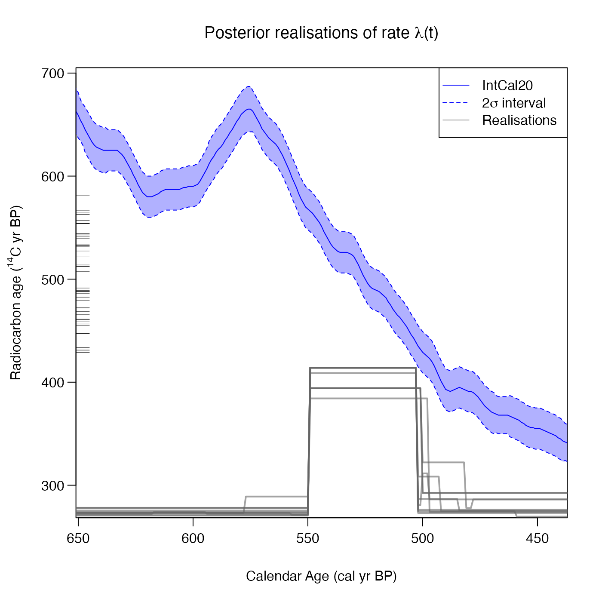

Plot Individual Realisations of Posterior Rate of Sample Occurrence for Poisson Process Model
Source:R/PlotRateIndividualRealisation.R
PlotRateIndividualRealisation.RdGiven output from the Poisson process fitting function PPcalibrate plot
individual realisations from the MCMC for the rate of sample occurrence (i.e., realisations
of the underlying Poisson process rate \(\lambda(t)\)), on a given calendar age grid
(provided in cal yr BP). Specify either n_realisations if you want to select a random set
of realisations, or realisations if you want to provide a vector of specific realisations.
Usage
PlotRateIndividualRealisation(
output_data,
n_realisations = 10,
plot_realisations_colour = NULL,
realisations = NULL,
calibration_curve = NULL,
plot_14C_age = TRUE,
plot_cal_age_scale = "BP",
interval_width = "2sigma",
bespoke_probability = NA,
denscale = 3,
resolution = 1,
n_burn = NA,
n_end = NA,
plot_pretty = TRUE,
plot_lwd = 2
)Arguments
- output_data
The return value from the updating function PPcalibrate. Optionally, the output data can have an extra list item named
labelwhich is used to set the label on the plot legend.- n_realisations
Number of randomly sampled realisations to be drawn from MCMC posterior and plotted. Default is 10.
- plot_realisations_colour
The colours to be used to plot the individual realisations. Default is greyscale (otherwise should have same length as number of realisations).
- realisations
Specific indices of realisations (in thinned version) to plot if user does not want to sample realisations randomly). If specified will override
n_realisations.- calibration_curve
This is usually not required since the name of the calibration curve variable is saved in the output data. However, if the variable with this name is no longer in your environment then you should pass the calibration curve here. If provided, this should be a dataframe which should contain at least 3 columns entitled
calendar_age,c14_ageandc14_sig. This format matches intcal20.- plot_14C_age
Whether to use the radiocarbon age (\({}^{14}\)C yr BP) as the units of the y-axis in the plot. Defaults to
TRUE. IfFALSEuses F\({}^{14}\)C concentration instead.- plot_cal_age_scale
(Optional) The calendar scale to use for the x-axis. Allowed values are "BP", "AD" and "BC". The default is "BP" corresponding to plotting in cal yr BP.
- interval_width
The confidence intervals to show for the calibration curve. Choose from one of
"1sigma"(68.3%),"2sigma"(95.4%) and"bespoke". Default is"2sigma".- bespoke_probability
The probability to use for the confidence interval if
"bespoke"is chosen above. E.g., if 0.95 is chosen, then the 95% confidence interval is calculated. Ignored if"bespoke"is not chosen.- denscale
(Optional) Whether to scale the vertical range of the Poisson process mean rate plot relative to the calibration curve plot. Default is 3 which means that the maximum of the mean rate will be at 1/3 of the height of the plot.
- resolution
The distance between calendar ages at which to calculate the value of the rate \(\lambda(t)\). These ages will be created on a regular grid that automatically covers the calendar period specified in
output_data. Default is 1.- n_burn
The number of MCMC iterations that should be discarded as burn-in (i.e., considered to be occurring before the MCMC has converged). This relates to the number of iterations (
n_iter) when running the original update functions (not the thinnedoutput_data). Any MCMC iterations before this are not used in the calculations. If not given, the first half of the MCMC chain is discarded. Note: The maximum value that the function will allow isn_iter - 100 * n_thin(wheren_iterandn_thinare the arguments that were given to PPcalibrate) which would leave only 100 of the (thinned) values inoutput_data.- n_end
The last iteration in the original MCMC chain to use in the calculations. Assumed to be the total number of iterations performed, i.e.
n_iter, if not given.- plot_pretty
logical, defaulting to
TRUE. If setTRUEthen will select pretty plotting margins (that create sufficient space for axis titles and rotates y-axis labels). IfFALSEwill implement current user values.- plot_lwd
The line width to use when plotting the posterior mean (and confidence intervals). Default is 2 (to add emphasis).
Examples
#' # NOTE: All these examples are shown with a small n_iter and n_posterior_samples
# to speed up execution.
# Try n_iter and n_posterior_samples as the function defaults.
pp_output <- PPcalibrate(
pp_uniform_phase$c14_age,
pp_uniform_phase$c14_sig,
intcal20,
n_iter = 1000,
show_progress = FALSE)
# Plot 10 random realisations in greyscale
PlotRateIndividualRealisation(
pp_output,
n_realisations = 10)

# Plot three random realisations with specific colours
PlotRateIndividualRealisation(
pp_output,
n_realisations = 3,
plot_realisations_colour = c("red", "green", "purple"))
 # Plot some specific realisations
PlotRateIndividualRealisation(
pp_output,
realisations = c(60, 73, 92),
plot_realisations_colour = c("red", "green", "purple"))
# Plot some specific realisations
PlotRateIndividualRealisation(
pp_output,
realisations = c(60, 73, 92),
plot_realisations_colour = c("red", "green", "purple"))